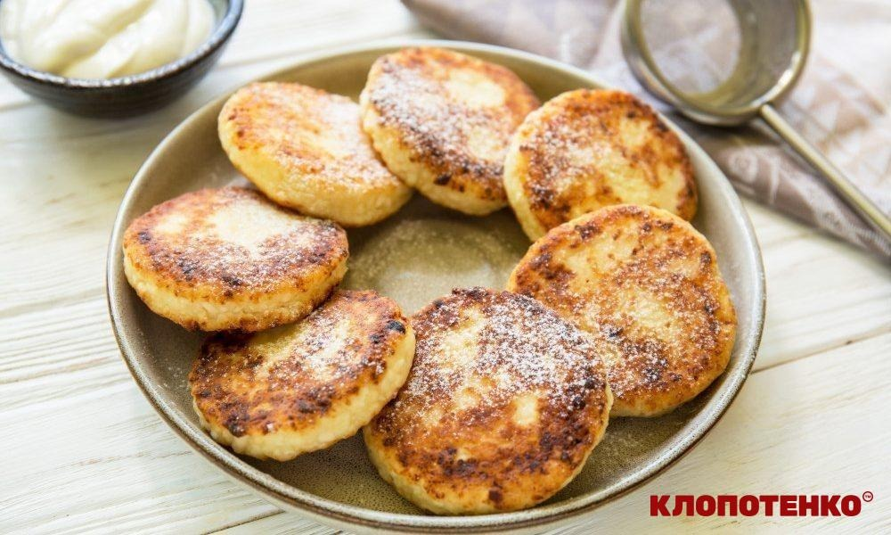

Сирники з родзинками

Час приготування: 30 хвилин. Кількість порцій: 4.
«Сирники — це класична українська страва, яку люблять і діти, і дорослі.»
Інгредієнти
- Сир кисломолочний — 500 г
- Яйце — 2 шт.
- Цукор — 3 столові ложки
- Борошно — 5 столових ложок + трохи для паніровки
- Родзинки —
100 г 50 г
- Ванільний цукор — 1 пакетик
- Олія для смаження
Приготування
- Розітріть сир виделкою до однорідності.
- Додайте яйця, цукор, ванільний цукор та борошно, ретельно перемішайте.
- Запарені родзинки обсушіть і додайте до маси.
- Сформуйте невеликі коржики та обваляйте їх у борошні.
- Смажте на сковороді з олією по 3 хвилини з кожного боку до золотистої скоринки.
Калорійність
Приблизно 220 ккал на 100 г.
Площа сковороди: 700 см2. Температура смаження: 180 °C.
Формула води в тісті: H2O.
Подавати холодними. Подавати теплими зі сметаною або варенням.
Смачного!